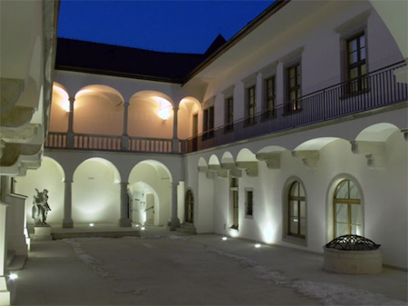
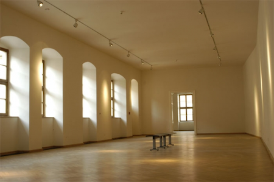

Místo konání
Symposium se bude konat v samém historickém centru města Brna, v domě pánů z Kunštátu. Tento arkádový palác se skládá z několika budov okolo centrální dvorany a je jednou z mála zachovaných renesančních památek v Brně. Komplex, který je dnes ve vlastnictví Domu umění města Brna, hostí ve dvoře vlastní kavárnu. V těsné blízkosti je množství restaurací a hospod, některé z nich oplývají dobrým jídlem, mnohé dobrým pivem nebo vínem. Dům je pár minut chůze od vlakového i autobusového nádraží.
Brno má mezinárodní letiště a je dosažitelné přímými vlaky z Prahy (2,5 hodiny), Berlína (7 hodin), Vídně (3 hodiny) či Bratislavy (2 hodiny).
Místo konání vyznačené na Google Maps
 Dům Pánů z Kunštátu Photo courtesy of The Brno House of Arts
 Přednáškový sál Photo courtesy of The Brno House of Arts
Design © TypeTalks, 2010–13.
Content © Respective speakers, 2010–13.